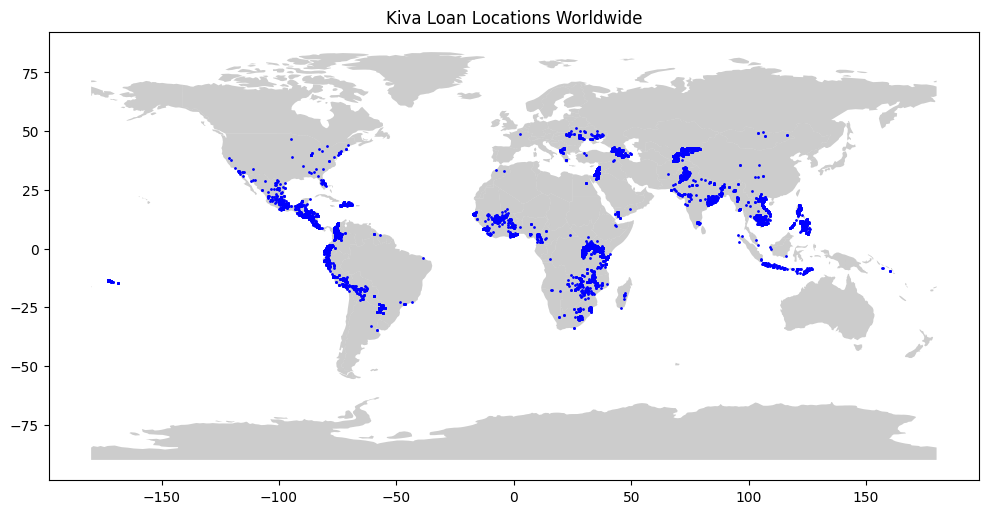

from google.colab import drive
drive.mount('/content/drive')Mounted at /content/driveHyeonho Jeong
May 10, 2023
exercise-your-first-map 입니다.
Looking in indexes: https://pypi.org/simple, https://us-python.pkg.dev/colab-wheels/public/simple/
Collecting geopandas
Downloading geopandas-0.13.0-py3-none-any.whl (1.1 MB)
━━━━━━━━━━━━━━━━━━━━━━━━━━━━━━━━━━━━━━━━ 1.1/1.1 MB 45.8 MB/s eta 0:00:00
Collecting fiona>=1.8.19 (from geopandas)
Downloading Fiona-1.9.4.post1-cp310-cp310-manylinux_2_17_x86_64.manylinux2014_x86_64.whl (16.4 MB)
━━━━━━━━━━━━━━━━━━━━━━━━━━━━━━━━━━━━━━━━ 16.4/16.4 MB 59.8 MB/s eta 0:00:00
Requirement already satisfied: packaging in /usr/local/lib/python3.10/dist-packages (from geopandas) (23.1)
Requirement already satisfied: pandas>=1.1.0 in /usr/local/lib/python3.10/dist-packages (from geopandas) (1.5.3)
Collecting pyproj>=3.0.1 (from geopandas)
Downloading pyproj-3.5.0-cp310-cp310-manylinux_2_17_x86_64.manylinux2014_x86_64.whl (7.7 MB)
━━━━━━━━━━━━━━━━━━━━━━━━━━━━━━━━━━━━━━━━ 7.7/7.7 MB 84.8 MB/s eta 0:00:00
Requirement already satisfied: shapely>=1.7.1 in /usr/local/lib/python3.10/dist-packages (from geopandas) (2.0.1)
Requirement already satisfied: attrs>=19.2.0 in /usr/local/lib/python3.10/dist-packages (from fiona>=1.8.19->geopandas) (23.1.0)
Requirement already satisfied: certifi in /usr/local/lib/python3.10/dist-packages (from fiona>=1.8.19->geopandas) (2022.12.7)
Requirement already satisfied: click~=8.0 in /usr/local/lib/python3.10/dist-packages (from fiona>=1.8.19->geopandas) (8.1.3)
Collecting click-plugins>=1.0 (from fiona>=1.8.19->geopandas)
Downloading click_plugins-1.1.1-py2.py3-none-any.whl (7.5 kB)
Collecting cligj>=0.5 (from fiona>=1.8.19->geopandas)
Downloading cligj-0.7.2-py3-none-any.whl (7.1 kB)
Requirement already satisfied: six in /usr/local/lib/python3.10/dist-packages (from fiona>=1.8.19->geopandas) (1.16.0)
Requirement already satisfied: python-dateutil>=2.8.1 in /usr/local/lib/python3.10/dist-packages (from pandas>=1.1.0->geopandas) (2.8.2)
Requirement already satisfied: pytz>=2020.1 in /usr/local/lib/python3.10/dist-packages (from pandas>=1.1.0->geopandas) (2022.7.1)
Requirement already satisfied: numpy>=1.21.0 in /usr/local/lib/python3.10/dist-packages (from pandas>=1.1.0->geopandas) (1.22.4)
Installing collected packages: pyproj, cligj, click-plugins, fiona, geopandas
Successfully installed click-plugins-1.1.1 cligj-0.7.2 fiona-1.9.4.post1 geopandas-0.13.0 pyproj-3.5.0Looking in indexes: https://pypi.org/simple, https://us-python.pkg.dev/colab-wheels/public/simple/
ERROR: Could not find a version that satisfies the requirement learntools (from versions: none)
ERROR: No matching distribution found for learntoolsUse the next cell to load the shapefile located at loans_filepath to create a GeoDataFrame world_loans.
#loans_filepath = "../input/geospatial-learn-course-data/kiva_loans/kiva_loans/kiva_loans.shp"
loans_filepath = ("/content/drive/MyDrive/data_mining/data/kiva_loans/kiva_loans/kiva_loans.shp")
# Your code here: Load the data
world_loans = gpd.read_file(loans_filepath)
world_loans.head()| Partner ID | Field Part | sector | Loan Theme | country | amount | geometry | |
|---|---|---|---|---|---|---|---|
| 0 | 9 | KREDIT Microfinance Institution | General Financial Inclusion | Higher Education | Cambodia | 450 | POINT (102.89751 13.66726) |
| 1 | 9 | KREDIT Microfinance Institution | General Financial Inclusion | Vulnerable Populations | Cambodia | 20275 | POINT (102.98962 13.02870) |
| 2 | 9 | KREDIT Microfinance Institution | General Financial Inclusion | Higher Education | Cambodia | 9150 | POINT (102.98962 13.02870) |
| 3 | 9 | KREDIT Microfinance Institution | General Financial Inclusion | Vulnerable Populations | Cambodia | 604950 | POINT (105.31312 12.09829) |
| 4 | 9 | KREDIT Microfinance Institution | General Financial Inclusion | Sanitation | Cambodia | 275 | POINT (105.31312 12.09829) |
Run the next code cell without changes to load a GeoDataFrame world containing country boundaries.
# This dataset is provided in GeoPandas
world_filepath = gpd.datasets.get_path('naturalearth_lowres')
world = gpd.read_file(world_filepath)
world.head()FutureWarning: The geopandas.dataset module is deprecated and will be removed in GeoPandas 1.0. You can get the original 'naturalearth_lowres' data from https://www.naturalearthdata.com/downloads/110m-cultural-vectors/.
world_filepath = gpd.datasets.get_path('naturalearth_lowres')| pop_est | continent | name | iso_a3 | gdp_md_est | geometry | |
|---|---|---|---|---|---|---|
| 0 | 889953.0 | Oceania | Fiji | FJI | 5496 | MULTIPOLYGON (((180.00000 -16.06713, 180.00000... |
| 1 | 58005463.0 | Africa | Tanzania | TZA | 63177 | POLYGON ((33.90371 -0.95000, 34.07262 -1.05982... |
| 2 | 603253.0 | Africa | W. Sahara | ESH | 907 | POLYGON ((-8.66559 27.65643, -8.66512 27.58948... |
| 3 | 37589262.0 | North America | Canada | CAN | 1736425 | MULTIPOLYGON (((-122.84000 49.00000, -122.9742... |
| 4 | 328239523.0 | North America | United States of America | USA | 21433226 | MULTIPOLYGON (((-122.84000 49.00000, -120.0000... |
Use the world and world_loans GeoDataFrames to visualize Kiva loan locations across the world.
# Load the data
#world_loans = gpd.read_file(loans_filepath)
world_filepath = gpd.datasets.get_path('naturalearth_lowres')
world = gpd.read_file(world_filepath)
# Plot the date
import matplotlib.pyplot as plt
fig, ax = plt.subplots(figsize=(12,8))
world.plot(ax=ax, alpha=0.4, color='grey')
world_loans.plot(ax=ax, markersize=1, color='blue', marker='o')
plt.title("Kiva Loan Locations Worldwide")
plt.show()FutureWarning: The geopandas.dataset module is deprecated and will be removed in GeoPandas 1.0. You can get the original 'naturalearth_lowres' data from https://www.naturalearthdata.com/downloads/110m-cultural-vectors/.
world_filepath = gpd.datasets.get_path('naturalearth_lowres')
Next, you’ll focus on loans that are based in the Philippines. Use the next code cell to create a GeoDataFrame PHL_loans which contains all rows from world_loans with loans that are based in the Philippines.
Run the next code cell without changes to load a GeoDataFrame PHL containing boundaries for all islands in the Philippines.
import geopandas as gpd
# Convert KML to GeoJSON using the `fiona` library
gpd.io.file.fiona.drvsupport.supported_drivers['KML'] = 'rw'
gpd.io.file.fiona.drvsupport.supported_drivers['LIBKML'] = 'rw'
PHL_geojson = gpd.read_file('/content/drive/MyDrive/data_mining/Philippines_AL258.kml', driver='KML')
PHL_geojson.to_file('/content/drive/MyDrive/data_mining/Philippines_AL258.geojson', driver='GeoJSON')
# Read the converted GeoJSON file
PHL = gpd.read_file('/content/drive/MyDrive/data_mining/Philippines_AL258.geojson')
Use the PHL and PHL_loans GeoDataFrames to visualize loans in the Philippines.
# Your code here
# Create a figure with size (12,8)
fig, ax = plt.subplots(figsize=(12,8))
# Plot Philippines map
PHL.plot(ax=ax, alpha=0.4, color='grey')
# Plot loans in the Philippines
PHL_loans.plot(ax=ax, markersize=1, color='blue', marker='o')
# Add title
ax.set_title('Kiva Loans in the Philippines', fontsize=20)
# Show the plot
plt.show()Can you identify any islands where it might be useful to recruit new Field Partners? Do any islands currently look outside of Kiva’s reach?
You might find this map useful to answer the question.
Continue to learn about coordinate reference systems.
Have questions or comments? Visit the course discussion forum to chat with other learners.